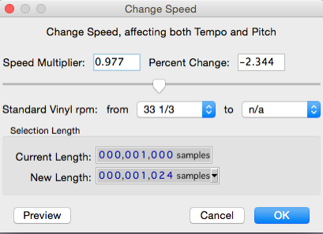

The exported .wav is 32 bit float 44.1 khz..... and it is 2048 samples long per cycle.
When I convert it to 16 bit 48khz it becomes 2230 samples long per cycle....
a 128 wavetable is 262144 samples long(32b, 44.1)....
Soooo... They actually fit in Axoloti table sample size without any resizing... But problem is they are 44.1 khz.... I am not sure what is most important sampe size or sample rate? Maybe you know this @thetechnobear ?
I ONLY use Audacity for stretching the samples AND for converting to raw files. All processing/editing I do in Sound Forge Mac version.
Stretching in Audacity:
Use the effect called"change speed". You can change the speed of the file with sample precision. You just put the sample length that you want the sample to be and process it. EASY 

You can do that easily in Audacity with the "change speed" plug in
Ps... When I am 100% sure everything works in the right way, I will post a full tutorial on how to do the whole process chain, so everyone can make their own sounds for that specifik patch..... I havent tried the version that was posted here yet , cause have been working all day and and today my kids come too... Will check tonight when they are put to bed...